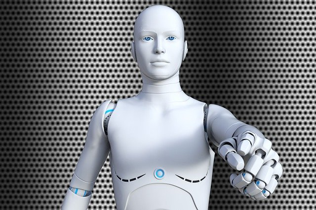
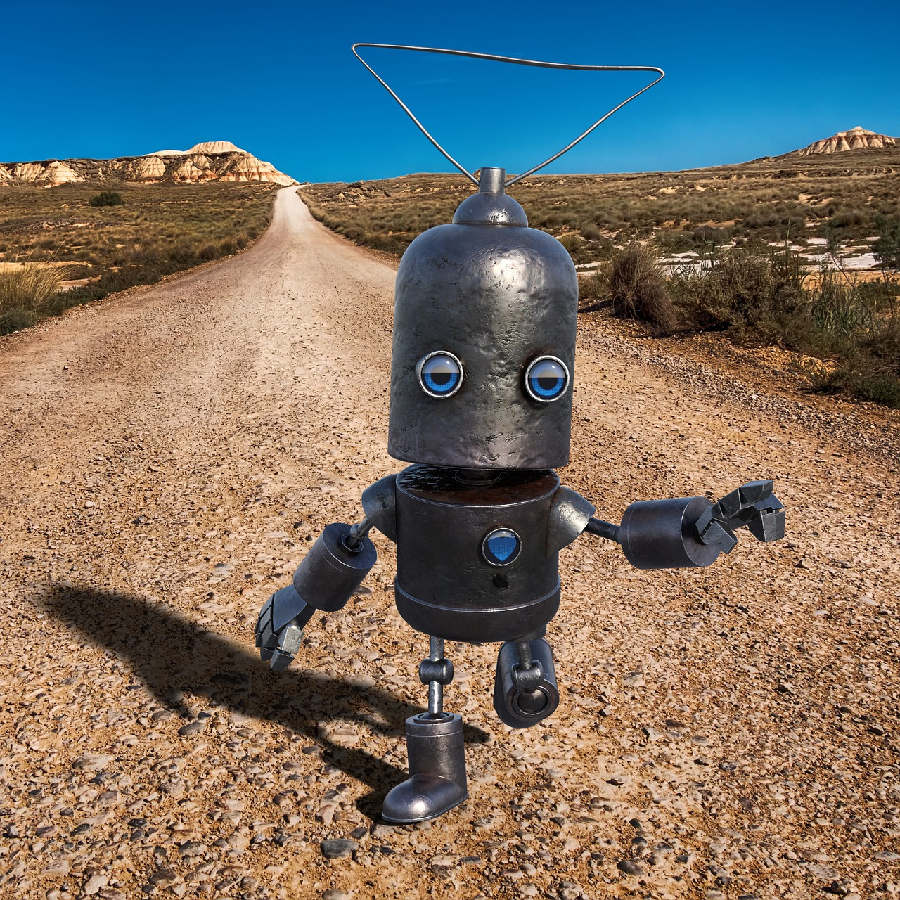

“Humans must become Cyborgs to stay relevant” (Elon Musk).

How would the world look like if Musk was right? Together with Elke Hackl (Austria) and Borg Bad Leonfelden (Austria) BOZAR presents a workshop for kids and youngsters between 10 and 17 years old on the topic of human cyborgs. Together they imagine how these cyborgs could look and approximate what could be possible tomorrow, such as cybernetic hybrid organisms and functionally improved human or humanoid life forms.
“Wann ist der Mensch kein Mensch mehr?

Zur einen Hälfte Mensch, zur anderen Maschine: Cyborgs. Wir kennen sie als Helden und Fieslinge aus großen Hollywoodstreifen. Eine technische Vision, die uns die Zukunft weist. Tatsächlich gehören Cyborgs schon lange nicht mehr allein der Science-Fiction-Welt an. Längst leben sie unter uns. Denn als Cyborgs gelten Menschen, in deren Körpern technische Geräte als Ersatz oder Unterstützung nicht ausreichend leistungsfähriger Organe integriert sind. So definiert es zumindest der Duden. Demnach wären auch all jene Cyborgs, die beispielsweise einen Herzschrittmacher oder eine künstliche Augenlinse tragen. Die Wahrheit ist: Es gibt derzeit keine einheitliche Definition. Prinzipiell können sich alle Menschen als Cyborg bezeichnen und fühlen, die auf irgendeine Art "technisch modifziert" sind.